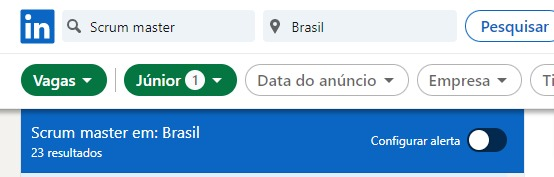
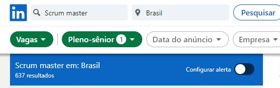

Você já ouviu falar algumas dessas palavras?
Isso é muito comum dentro das empresas de tecnologia na gestão dos seus projetos , porém, existe muita coisa por debaixo dos panos, não é apenas colar posts-it na parede, tem uma técnica por trás, que vamos ensiná-lo.
Hoje, muitas pessoas estão fazendo transição de carreira para a área da agilidade, isso acontece porque o mercado está em falta desses profissionais e as empresas estão abrindo o leque de atuação e contratação. Outras áreas além da tecnologia estão começando a buscar por profissionais em agilidade para trabalhar em seus projetos. Se você está pensando em fazer essa transição e não sabe por onde começar, fica aqui comigo.
Mas, o que são práticas ágeis?
Se você chegou até aqui de paraquedas, seja bem-vindo, hoje é um ótimo dia para você conhecer essa oportunidade que pode ser a chave que você estava buscando . Se você nunca ouviu falar de agilidade, frameworks ágeis, Scrum, caiu no lugar certo, aqui você irá aprender tudo isso e muito mais.
As práticas ágeis surgiram para dar transparência aos projetos, mostrando de forma clara e objetiva, toda a sua evolução. Se você chegar em uma equipe que utiliza práticas ágeis, você consegue saber o que eles estão fazendo, o papel de cada um dentro da equipe, o que falta a ser feito e o que já foi entregue.
Me diga que empresa não quer implementar um processo assim, claro e objetivo? E o principal, você vê a mudança sendo feita diariamente, não precisa esperar pelo produto final.
Em cima disso o mercado de trabalho começou a buscar profissionais que sabem trabalhar com esse tipo de gestão e frameworks ágeis como Scrum, Safe, e o método Kanban. Tenho certeza que você já ouviu falar de um deles, e caso não, está no lugar certo para aprender.
Vou ser bem sincera contigo. Você NÃO precisa ser formado em áreas de tecnologias para entrar no mercado de trabalho e buscar vagas para trabalhar com scrum, kanban e demais ferramentas, MAS, você precisa conhecer como esses frameworks funcionam e saber aplicá-los.
Atenção: Não é um bicho de 7 cabeças, mas exige dedicação e comprometimento para aprender bem seu funcionamento e exercer a profissão.
É uma jornada, e vou te ser bem sincera, não é da noite para o dia que você vai conseguir uma vaga de trabalho e sair ganhando rios de dinheiro. Não é assim que as coisas funcionam na vida.
Se você quer aprender sobre agilidade da forma certa, conhecer o passo a passo de como começar nessa carreira e aprender algo novo, você está no lugar certo, pois aqui nós iremos te mostrar o início da jornada, começando pelos conceitos básicos, não adianta eu sair jogando conteúdo para você do básico ao avançado de uma só vez, vamos passo a passo juntos nessa caminhada que começa com o primeiro degrau. Você se inscrevendo no nosso curso Introdução à Agilidade .
Nesse curso, vamos abordar o framework Scrum, um dos mais utilizados nas empresas.
Uma pesquisa rápida no LinkedIn para vagas de Scrum Master, podemos ver que a demanda é alta.
 Você pode notar que para cada tipo de senioridade (é o seu grau de conhecimento e experiência dentro da carreira), por exemplo um Scrum master júnior está começando na profissão, o Scrum master pleno já está em um nível acima com mais anos de experiência na área e o Scrum master sênior é o profissional que domina a ferramenta. Não existe uma quantidade de anos exata para mudar de nível, tudo depende da sua dedicação e aplicação prática dos conhecimentos adquiridos.
Dá uma olhada na média dos salários de cada um. Nós tiramos a informação do site Glassdoor.
Nada mal né? É importante lembrar que esses valores são uma média e podem variar para mais ou para menos.
Você irá encontrar diversos cursos na internet
sobre esse assunto, tem muita coisa disponível gratuitamente no YouTube, mas, sendo sincera,
falta saber aplicar da forma correta, eu posso te
Quero que você aprenda da forma correta, através da bibliografia oficial e sem pular passos. Eu não posso te prometer que você irá ser contratado no dia seguinte do curso, PORÉM irei te dar todas as ferramentas para você ir se desenvolvendo enquanto um profissional Scrum Master, de qualidade e que sabe o que está fazendo e o porquê de fazer dessa forma.
Esse é o início da sua jornada, e é importante você saber que o trabalho é em equipe. O Scrum Master trabalha com uma equipe multidisciplinar onde cada pessoa desempenha um papel no qual o objetivo final é entregar valor para o cliente, afinal você estará trabalhando em algo para alguém.
Sua mentora
Anne Caroline Melo Santos
Este curso será ministrado por mim e é um prazer ter você comigo. Atualmente trabalho como Agile Coach em uma cooperativa de crédito e atuo com práticas e métodos ágeis a 4 anos.
Sou Mestra em Ciência da Computação
Palestrante e Especialista na Adoção de Práticas Ágeis na Gestão de Times Remotos
Certificada Professional Scrum Master I (PSM) pela Scrum.org
Team Kanban Practitioner - certificada pela Kanban University
Kanban System Design - certificada pela Kanban University
Kanban System Improvement - certificada pela Kanban University
SAFe Agilist - certificada pela Scaled Agile
Sempre fui muito ligada em processos e gestão de projetos, não é à toa que minha disciplina preferida na universidade era engenharia.
Foi nessa disciplina também que tive meu primeiro contato com agilidade, em especial com SCRUM. Todavia, somente quando fui para o mercado de trabalho, que comecei a vivenciar na prática os benefícios que a agilidade poderia agregar no fluxo de desenvolvimento e na qualidade das entregas.
O SCRUM foi a minha porta de entrada nesse universo, passado um tempo, percebi que precisava explorar novas práticas e expandir meus horizontes, foi quando comecei a me aprofundar mais no Método Kankan.
Engana-se quem pensa que o Kankan é apenas uma quadro na parede, é um poderoso sistema de gestão visual que pode ser útil em diferentes contextos, não somente no desenvolvimento de software.
Recentemente, tenho focado meus estudos e pesquisas na utilização do SAFe (Ágil em escala), um framework que permite a aplicação da agilidade em um ambiente escalado com múltiplos times evoluindo e mantenho o mesmo produto.
Para quem é esse curso?
- Para você que quer fazer transição de carreira;
- Para você que quer aumentar seu conhecimento adquirindo uma nova soft skill;
- Para você, profissional da área de tecnologia;
- Para você que busca uma nova profissão;
- Para você que já trabalha na área e quer relembrar alguns conceitos;
Esse curso é para todo mundo, mas devo lembrá-los que é um curso de nível iniciante, iremos aprofundar os conhecimentos para que você saia com uma base bem sólida e sem dúvidas, para iniciar sua jornada na agilidade.
O que você irá aprender:
- O que é Agilidade?
- Manifesto Ágil
- Valores
- Framework Scrum
- Scrum Eventos
- Sprint
- Planejamento
- Diária
- Revisão
- Retrospectiva
- Scrum Papéis
- Scrum master
- Product owner
- Time técnico
- Scrum Artefatos
- Backlog de produto
- Backlog da sprint
- Incremento de valor
- Atividade Prática
Você sairá deste curso com uma base sólida a respeito do Scrum, mas lembrando que é apenas o começo da jornada. O estudo é constante e a sua melhoria contínua.
Perguntas & Respostas
Preciso ter algum conhecimento prévio para fazer seu curso?
Não, você não precisa de nenhum tipo de conhecimento prévio. Neste curso você irá aprender desde o zero até o básico sobre Scrum. Pode ficar tranquilo. Aqui você irá aprender a base da forma correta.
Preciso ser da área de tecnologia para fazer seu curso?
Não, com a abertura das empresas às práticas ágeis, você não precisar ser formado ou ter feito alguma faculdade de tecnologia para ser um Scrum master.
Esse curso possui certificado?
Sim, todos os nossos cursos possuem certificado.